Opgave 1
H 1.9 blz. 13
In een zaklantaarn zit een 4,5V-batterij. Door het lampje loopt een stroom van 0,3 A.
Hoe groot is de weerstand van het lampje?
Teken het netwerkschema.
Uitwerking
Wet van ohm:

Enhanced Professional Edition
Ir. JGM van der Zanden | Holmes - Elektrische Netwerken (3e editie)
Enhanced met verbeterde pedagogiek en professionele formule-opmaak
In een zaklantaarn zit een 4,5V-batterij. Door het lampje loopt een stroom van 0,3 A.
Hoe groot is de weerstand van het lampje?
Teken het netwerkschema.
Wet van ohm:
Een straalkachel is aangesloten op een spanning van 230 V. De weerstand van het verwarmingselement is 51 Ω. Hoeveel stroom wordt er opgenomen?
Wet van ohm:
 Opgave
3:
Opgave
3:
Bij een knooppunt geldt:
en
Bereken , en .
Uitwerking opgave 3:
Stroomwet van Kirchhoff: De som van alle stromen naar een knooppunt is gelijk aan de som van stromen vanaf dat knooppunt.
Dus in de afbeelding zijn de binnenkomende stromen: , en en de uitgaande stroom .
Dus:
Verder is en Als we dat invullen in de eerste vergelijking levert dat op:
dus
Dus kunnen we nu de andere stromen uitrekenen:
en
 Opgave
4:
Opgave
4:
In een gesloten maas geldt:
Gegeven wordt nog:
Bereken de stroom door
De maas wordt nu ‘losgeknipt’ uit het netwerk, zodat er geen stroom van buitenaf naar toestroomt. Hoe groot wordt de stroom in dat geval?
Uitwerking opgave 4a:
Spanningswet van Kirchhoff: De som van alle spanningen in een gesloten kring is nul.
Dus in de afbeelding moet gelden als we rechtsom kijken:
Invullen gegeven waarden:

Uitwerking opgave 4b:
Zie schema hiernaast met simulatie.
Dus in de afbeelding moet gelden: als we linksom kijken in de richting van (let op de stroomrichting en de polariteit van de stroommeter):
Invullen gegeven waarden:
Tip: als weerstanden in kΩ dan stromen in mA en krijg je eenvoudiger formules.
“Er staat stroom op de wandcontactdoos” is onzin.
Is de bewering “Er staat spanning op de wandcontactdoos” technisch wèl helemaal juist?
Zo niet, wat moet het dan zijn?
Uitwerking 5.
Beter is: tussen de twee polen van het stopcontact staat een wisselspanning van 230Veff. En ook: op de ene pool van het stopcontact staat (i.h.a.) een spanning van 0V t.o.v. aarde (de blauwe draad). En op de andere pool staat een spanning van 230V t.o.v. de aarde (de bruine draad; daar krijg je een levensgevaarlijke schok van….). Op de randaarde staat geen spanning t.o.v. aarde; die is doorverbonden met de aarde van metalen voorwerpen, metalen vloermatjes in douche en/of keuken, waterleiding, CV etc.; en die is via de hoofdaardrail doorverbonden met de aarde vanuit de straat of met een aardpen in de grond.
Opgave 6, 7 en 8:

In dit netwerk is de spanning over de weerstand gelijk aan:
a:
b:
c:
d:
De stroom staat getekend dat die de weerstand ingaat bij de – van . Dus is alleen antwoord b: juist.
In dit netwerk is de stroom door de weerstand gelijk aan:
a:
b:
c:
d:
Laat je niet gek maken! Over staat gewoon de spanning van de spanningsbron . Dus is alleen antwoord a: juist.

In dit netwerk is de stroom door de weerstand gelijk aan:
a:
b:
c:
d:
Dit moet je oplossen met de stroomwet van Kirchhoff, want je kijkt naar het knooppunt tussen U1 en de stroombron I2. De maas rechtsboven kun je vergeten omdat de spanningsbron U1 de stromen en levert. Dan zijn de inkomende stromen en en de uitgaande stromen en .
=>
Dus is alleen antwoord d: juist.
H 2.6. blz. 21
Schat eerst en bereken daarna de vervangingsweerstand tussen de punten A en B, voor de volgende schakelingen:
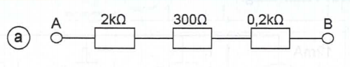
Een serieschakeling van weerstanden betekent dat de totale weerstand bij elkaar opgeteld mag worden:
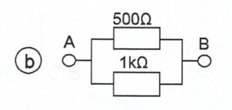
Parallelschakeling van 2 weerstanden:

Aanpak: Eerste bovenste weerstanden in serie bij elkaar optellen: 150+300 = 450 Ω.
Daarna deze 450 Ω parallel aan 450 Ω, dus dat wordt de helft = 225 Ω
Of:

3 weerstanden parallel; dan handiger om de “geleidingsvariant” te nemen:
dit kun je gewoon uitrekenen op de rekenmachine, maar wij gaan hieronder de noemers gelijkmaken:

Aanpak: eerst vervangingsweerstand van 2 parallelle weerstanden bereken en dan optellen bij die van 12Ω.
Dus

Hier is het het slimste om van rechts naar links te werken. Je "ziet" dan direct dat 30k + 20k || 50k = 25k
Die 25k staat weer in serie met 50k en parallel aan 50k, dus weer 25k.
Die staat in serie met 35k, zodat dit 60k oplevert.
Twee lampen zijn parallel geschakeld, en via twee draden van ieder 6 meter verbonden met een (net-)spanning van 230 V. De weerstand van iedere lamp is 150 Ω; de draad heeft een weerstand van 2 Ω/m.
Teken het netwerkschema; bereken daarna de vervangingsweerstand van het netwerk,

R3 en R4 zijn de weerstanden van de draad van 6 meter. De weerstand van de draad is 2 Ω/m, Dus .
De beide lampen staan parallel, dus de totale weerstand van de lampen = 150/2 = 75 Ω.
Dus:
Bewijs dat de vervangingsweerstand van drie parallel geschakelde weerstanden niet gelijk is aan het product van die weerstanden gedeeld door de som:
De dimensie van de formule is (Ohm)3/Ohm, dus Ohm2. En dus kan dit geen weerstand zijn. Dus moet de formule fout zijn.
Onderstaand een uitvoeriger bewijs:
Voor de vervangingsweerstand geldt:
Eerst moet alles onder dezelfde noemer worden gebracht, dus :
Dus: q.e.d.
(Latijn: quod erat demonstrandum = hetgeen bewezen diende te worden)
Bewijs dat de vervangingsgeleiding van meerdere parallel geschakelde weerstanden wel gelijk is aan:
Op pagina 17 staat dat de Geleiding en dat voor parallel schakeling van weerstanden geldt:
Als we overal in de formule voor de geleiding 1/R invullen ontstaat inderdaad die van de weerstanden. Q.e.d.
Een alternatieve benadering is deze:
Voor G geldt: G = I/U. Als ik G1, G2, ….. en Gn parallel schakel, dan geldt dat de U's gelijk zijn en de I's opgeteld worden, dus geldt voor de parallel schakeling van die geleidingen dat Itotaal = I1 + I2 + …. In = U.( G1 + G2 + ….. Gn)
Dit betekent dat Itotaal/U = Gtotaal = G1 + G2 + ….. Gn. Q.e.d.
Een ampèremeter met een weerstand van 0,7 Ω geeft een volle schaaluitslag bij een spanning van 0,015 V tussen de klemmen. Hoe groot moet de parallelweerstand (‘shuntweerstand’) zijn voor een meetbereik van 15 A?

De meter heeft een weerstand van 0,7 Ω, maar dat is helemaal niet van belang voor deze vraag. Het enige gegeven dat belangrijk is, is dat de meter een volle uitslag geeft bij 0,015 V. Dus die spanning moet over de ampèremeter staan als 15 A door de meter vloeit. Over de te bepalen parallelweerstand staat dan dus ook 0,015V (zie schema). Dan is het niet meer zo moeilijk om de weerstandswaarde van R2 te bepalen:
= 1 mΩ
Bereken de stromen I1…I3 in deze schakeling:

Als R2 15 Ω is, wat worden dan de stromen?
Eerst een recht-toe-recht-aan benadering. Hier kun je eerst de vervangingsweerstand van de 3 parallel weerstanden uitrekenen (via de geleiding). Maar dat kan hier ook met een handig, snel trucje: Het KGV is 60 Ohm. Er staan dan 6 + 3 + 2 = 11 weerstanden van 60 Ohm parallel 🡺 R = 60/11 Ohm. U is dan 12 mA . 60/11 = 720/11 Volt. Vervolgens reken je de stromen uit. Per R van 60 Ohm is I = 720/11/60 = 12/11 mA.
Dus I1 = - 6.12/11 = - 6,54 mA (let op het teken!)
Dus I2 = + 3.12/11 = 3,27 mA
Dus I3 = + 2.12/11 = 2,18 mA
Veel sneller gaat het zo: de verhoudingen van de stromen is als 1/10:1/20:1/30 (van links naar rechts). Dus ook als (KGV) 6:3:2. De som daarvan is 11. Dus stromen verhouden zich als 6/11, 3/11 en 2/11 van het geheel.
De stroom in het geheel is 12 mA.
Dus I1 = - 6/11.12 mA = - 6,54 mA,
I2 = 3/11.12 = 3,27 mA en
I3 = 2/11.12 = 2,18 mA.
Een veel gemaakte fout is, dat je denkt dat de stromen zich verhouden als 10:20:30, dus 1:2:3. Dat is dus fout. Het is juist 1/10:1/20:1/30.
Dat blijkt uit het volgende deel van deze opgave:
Als R2 = 15 Ohm dan worden de stroomverhoudingen: 1/10:1/15:1/30 oftewel 3:2:1.
De som is 6. Dus worden de stromen nu -3/6, 2/6 resp. 1/6 x 12 mA =
- 6, 4, 2 mA.
Een alternatieve aanpak kan ook zo:
Eerst de totale vervangingsweerstand bepalen en dan weet je de spanning. Daarna 3x de wet van Ohm toepassen:
 Dus
Dus
De spanning over alle weerstanden is dus gelijk aan:
Uitwerking opgave 6b:
Aanpak: eerst de totale vervangingsweerstand bepalen en dan weet je de spanning. Daarna 3x de wet van Ohm toepassen:
Dus

De spanning over alle weerstanden is dus gelijk aan:
Bepaal de spanningen U1 en U2 in deze schakeling:

Aanpak: spanningsdeling en U1 zal negatief zijn, zoals het getekend is:
Dan is al direct duidelijk dat 9 – 6 = 3V over R1 (50 Ω) staat. Omdat de polariteit van U1 tegenovergesteld is, moet het antwoord dus zijn U1 = -3 V.
Bereken de weerstand in dit netwerk:
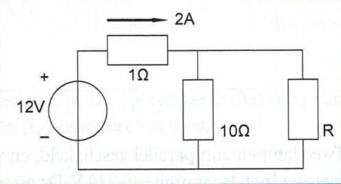
Hier komt het er op aan dat je de juiste vergelijking met 1 onbekende opstelt.
Maar eenvoudiger is het als je doorziet dat over de 10||R gewoon dezelfde, makkelijk te berekenen spanning staat:
De spanningsval over 1 Ohm met 2A is 2V. Dus is de spanning over 10||R 10V.
Omdat de stroom door 10 Ohm dus 1A, moet de andere 1A door de R gaan, en is dus
R = 10 Ohm.
Een schakeling bestaat uit een parallelschakeling van een weerstand van 5 kΩ en een onbekende weerstand Rx. In serie met deze schakeling staat nog een onbekende weerstand Ry. Als de totale schakeling aangesloten is op een 100 volt spanningsbron, moet de bron 10 mA leveren. De deelstroom door de weerstand van 5 kΩ moet dan 2 mA zijn.
Ontwerp deze schakeling:
Hint: pak dit probleem systematisch aan:
- analyse (lezen, schema, verwachting, formules)
- oplossingsmethode (maak een plan)
- uitwerking
- controle (klopt de uitkomst met de schatting?)
Er zijn 3 verschillende benaderingen uitgewerkt. Kies voor jezelf een aanpak die je het makkelijkste ligt. Bij veel opgaven leiden meerdere wegen naar Rome…
De intuïtieve manier verloopt als volgt:
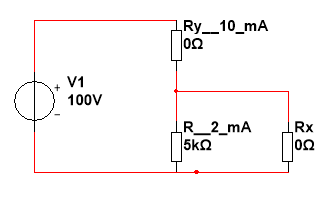
U over Rx = 2 mA x 5k = 10V. en I door Rx = 10-2=8mA 🡺
Rx = 10V/8 mA = 1250 Ohm.
U over Ry = 100V - 10V = 90V 🡺 Ry = 90V/10 mA = 9kOhm.
Dit is hier de snelste manier.
======
De meer analytische manier verloopt als volgt.
Vul bekende zaken in: dus U over Rx = 2 mA x 5k = 10V
Er zijn 2 eisen, dus er zijn dan nog 2 vergelijkingen met 2 onbekenden.
V1 = 100V = Ry.Iy + 10V = Ry.10 mV + 10 V (1)
It (door Rx) = 10 - 2 mA = 8 mA = Ux / Rx = 10/Rx. (2)
Uit (1) volgt 90V = Rx.10mV 🡺 Rx = 90/10k = 9k.
Uit (2) volgt Rx = 10V/8 mA = 1250 Ohm
Alternatieve aanpak:
Parallelweerstand berekenen, want ingangsstroom is 10 mA en stroom door andere weerstand is 2 mA. Daarna is serieweerstand te berekenen omdat totale weerstand te berekenen is omdat U=100 V en I = 10mA.
De spanning over de parallelschakeling is en de stroom door Rx = 10 – 2 = 8 mA
Dus
Nu weten we ook dat de spanning over Ry gelijk is aan 100 – 10 = 90 V en dat de stroom erdoorheen 10 mA is. Dus moet de weerstand gelijk zijn aan:
Opgave 10, 11, 12 en 13:
De volgende vier vragen hebben alle betrekking op onderstaand netwerk.

In dit netwerk is de spanning over de weerstand Ra gelijk aan:
a:
b:
c:
d:
In ieder geval loopt de stroom I1 volledig door de weerstand Ra, dus de spanning over de weerstand Ra is gelijk aan . Maar de stroom I1 komt wel binnen bij het min-teken van de spanning waardoor er nog een min-teken voor gezet moet worden en het antwoord dus b: moet zijn:
In dit netwerk is de stroom door de weerstand Rb gelijk aan:
a:
b:
c:
d:
Als we naar knooppunt A kijken dan volgt uit de stroomwet van Kirchhoff dat:
en de spanning over Rb gelijk is aan die over Rd. dus volgens de wet van Ohm blijkt dat:
Omdat we moeten weten zetten we de laatste formule om naar en vullen die in de eerste in: dan wordt de eerste vergelijking:
dus antwoord c: is juist
In dit netwerk is de stroom door de weerstand Rc gelijk aan:
a:
b: )
c:
d: )
Over Rc staat gewoon de spanning U1. Dat betekent dat volgens de wet van Ohm moet gelden dat dus antwoord a: is juist.
In dit netwerk is de stroom door de weerstand Rd gelijk aan:
a:
b:
c:
d:
Als we naar knooppunt A kijken dan volgt uit de stroomwet van Kirchhoff dat:
=> wat antwoord d: is.
Opgave 14, 15, 16 en 17:
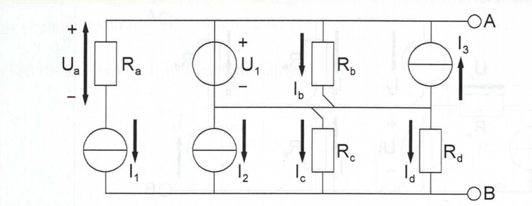
In dit netwerk is de spanning over de weerstand Ra gelijk aan:
a:
b:
c:
d:
Omdat in serie met weerstand een stroombron is geplaatst weet je zeker dat de stroom door de weerstand vloeit en is de spanning over dus gelijk aan:
dus antwoord a: is het juiste antwoord.
In dit netwerk is de stroom door de weerstand Rb gelijk aan:
a:
b:
c:
d:
Over de weerstand staat een spanning die gelijk is aan omdat dat een ideale spanningsbron is. Dus is de stroom , waarmee antwoord a: dus juist is.
Andere oplossing is de superpositiemethode waarbij alle stroombronnen open zijn en allen de maas , overblijft.
In dit netwerk is de stroom door de weerstand Rc gelijk aan:
a:
b:
c: )
d:
Aanpak: de stroomwet van Kirchhoff gebruiken op knooppunt B:
dus antwoord d: is juist.
Bereken , en van deze netwerken; teken de uitwendige karakteristiek.
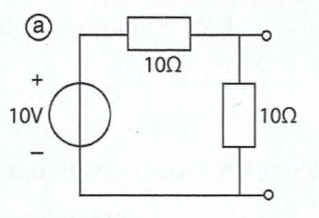
Aanpak Ri bepalen: Thévenin: inwendige weerstand 2 weerstanden 10 Ω parallel omdat spanningsbron een kortsluiting vormt; dus Ri = 5 Ω.
Aanpak U0 bepalen: Thévenin: onbelaste spanning op de klemmen is een spanningsdeling:
Aanpak Ik bepalen: Thévenin vervangingsschema nemen en klemmen kortsluiten.

Wet van ohm:
Dus totaal:
U0 = 5 V Ik = 1 A Ri = 5 Ω
Uitwerking opgave 1b:
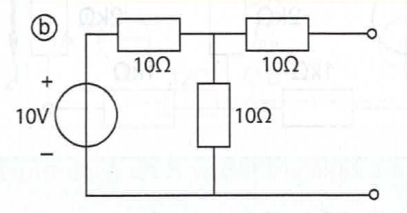
Aanpak Ri bepalen: Thévenin: inwendige weerstand 2 weerstanden 10 Ω parallel met weerstand 10 Ω in serie omdat spanningsbron een kortsluiting vormt; dus Ri = 5 + 10 = 15 Ω.
Aanpak U0 bepalen: Thévenin: onbelaste spanning op de klemmen is een spanningsdeling:
(want er loopt geen stroom door de laatste weerstand).
Aanpak Ik bepalen: Thévenin vervangingsschema nemen en klemmen kortsluiten.

Wet van ohm:
Dus totaal:
U0 = 5 V Ik = 333 mA Ri = 15 Ω
Uitwerking opgave 1c:

Aanpak Ri bepalen: Norton: inwendige weerstand 2 weerstanden 10 kΩ in serie met omdat stroombron een oneindig hoge weerstand heeft; dus Ri = 10 + 10 = 20 kΩ.
Aanpak Ik bepalen: Norton: kortsluiten klemmen levert een parallelschakeling van de twee weerstanden op. Omdat de weerstanden gelijk zijn zal de 10 mA gelijk worden verdeeld over de twee takken en is
Aanpak U0 bepalen: Norton vervangingsschema nemen en klemspanning berekenen:
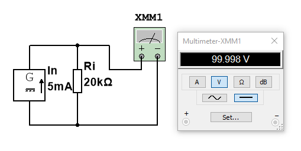Wet van ohm:
Dus totaal:
U0 = 100 V Ik = 5 mA Ri = 20 kΩ
Uitwerking opgave 1d:
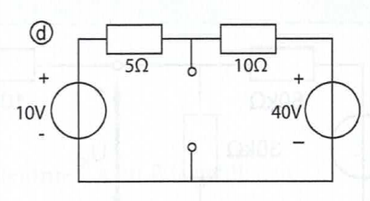
Aanpak Ri bepalen: Thévenin: inwendige weerstand 10 Ω en 5 Ω parallel omdat beide spanningsbronnen kortsluitingen vormen; dus
Aanpak U0 bepalen: Superpositie: eerst klemspanning berekenen ten gevolge van 10V met kortgesloten 40V: dat is een spanningsdeling:
Daarna klemspanning berekenen ten gevolge van 40V met kortgesloten 10V: dat is een spanningsdeling:
Dus de klemspanning
 Aanpak Ik
bepalen: Thévenin vervangingsschema nemen en klemmen
kortsluiten.
Aanpak Ik
bepalen: Thévenin vervangingsschema nemen en klemmen
kortsluiten.
Wet van ohm:
Dus totaal:
U0 = 20 V Ik = 6 A Ri = 3,33 Ω
Een meer intuïtieve manier:
Ga uit van - en - = 0V. Dan is er 30V verschil over + en +.
De R-deler 5/10 Ohm maakt daar 10 resp. 20V van.
Dus is Uth = 10V + 10V = 20V.
Ikortsluit = 10V/5 Ohm + 40V/10 Ohm = 2A + 4A = 6A.
Rth = 5 || 10 Ohm = 3,33 Ohm.
Een meer analytische benadering:
Je kunt ook netjes de maaswet toepassen. Dat moet als het ingewikkeld is. Bij simpele opgaven kun je het antwoord "zo aflezen uit het schema", zoals ik boven heb beredeneerd. Mits je de basics van circuits begrijpt. Snapt wat er gebeurt, dat stroom van + naar - loopt. En snapt wat een spanningsdeler is.
De maaswet berekening verloopt als volgt:
10V + 5.I + 10.I - 40V = 0.
15.I = 30V
I = 2A.
U5Ohm = 2A . 5 Ohm = 10V.
Uth = 10V + 10V = 20V.
Je moet dan nog een Thévenin schema tekenen met een Uth = 20V en Rth = 3,33 Ohm.
En een Norton schema met I = 6A en R = 3,33 Ohm. Die geeft zonder belasting ook netjes 20V.
De uitwendige karakteristiek is dan:

Bij vereenvoudigen gaat het er om dat je Uth, Ith en Rth berekent.
Het standaard recept is: bepaal U bij onbelast netwerk. Bepaal I bij kortsluiting. Of bepaal de R. Als je er 2 hebt, heb je ze alle drie. Dat levert je de Uth, Ith en Rth op.
Vereenvoudig deze netwerken tot
Één spanningsbron met inwendige weerstand;
Één stroombron met inwendige weerstand.

 Uitwerking opgave
2a:
Uitwerking opgave
2a:
Rth = 3||6 Ohm = 2 Ohm.
Veronderstel de -/- als Ground = 0V.
Het verschil tussen de 12+ en de 3+ is 9V
Met de spanningsdeler van 9 Ohm totaal staat er dus 1V/Ohm over die deler.
Dus vanaf de 12+ geredeneerd staat de uitgang op 12 - 6 = 6V.
Of vanaf de 3+ geredeneerd staat de uitgang op 3 + 3 = 6V
Uth = 6V
Ith = 6/2 = 3A.
Daarmee kun je dus het Thévenin (een Uspanningsbron + een R) en het Norton (een Istroombron + een R) vervangingsschema maken.
Alternatief:
Als je het schema iets anders tekent is het hetzelfde netwerk als uit opgave 1d, maar dan met andere waarden, dus de aanpak is gelijk:
Aanpak Ri bepalen: Thévenin: inwendige weerstand 6 Ω en 3 Ω parallel omdat beide spanningsbronnen kortsluitingen vormen; dus
Aanpak U0 bepalen: Superpositie: eerst klemspanning berekenen ten gevolge van 12V met kortgesloten 3V: dat is een spanningsdeling:
Daarna klemspanning berekenen ten gevolge van 3V met kortgesloten 12V: dat is een spanningsdeling:
Dus de klemspanning
Aanpak Ik bepalen: Thévenin vervangingsschema nemen (links) en klemmen kortsluiten.

Wet van ohm:
Klopt ook met Norton equivalent (rechts)
Dus totaal: U0 = 6 V Ik = 3 A Ri = 2 Ω

Vanuit de uitgang bekeken "zie" je 10 Ohm en dan de spanningsbron met R=0. Wat daar nog achter zit (6V en 18 Ohm) is dus niet relevant.
Dus Rth = 10 Ohm. En Uth = 4V. En Ith = 4/10 = 400 mA.
Alternatief:
Aanpak Ri bepalen: Thévenin: door de 4 V spanningsbron kort te sluiten is linkertak niet meer van belang voor de Ri en is de inwendige weerstand dus gelijk aan 10 Ω.
Aanpak U0 bepalen: Superpositie: eerst klemspanning berekenen ten gevolge van 6V met kortgesloten 4V: dat is dus gelijk aan 0 V:
Daarna klemspanning berekenen ten gevolge van 4V met kortgesloten 6V: dat is dus 4 V:
. Dat betekent dus dat over de weerstand van 18 Ω een spanning van -2 V staat en de stroom dus de spanningsbron van 6 V in gaat en deze dus vermogen opneemt.
Dus de klemspanning
Aanpak Ik bepalen: Thévenin vervangingsschema nemen en klemmen kortsluiten.

Wet van ohm:
Klopt ook met Norton equivalent (rechts)
Dus totaal: U0 = 4 V Ik = 0,4 A Ri = 10 Ω
Uitwerking opgave 2c:

Je "ziet" daar vanuit de uitgang 20 Ohm || (van alles incl. een stroombron).
Dus Rth = 20||∞ = 20 Ohm.
Uth bepaal je door onbelaste uitgang te meten. Met een stroombron van 2A "de verkeerde kant op", betekent dat dat er over 20 Ohm (van boven naar beneden gemeten) Uth = -40V staat. Ith = -40/20 = -2A.
Alternatief:
Aanpak Ri bepalen: Thévenin: door de stroombron is de linkertak niet meer van belang voor de Ri en is de inwendige weerstand dus gelijk aan 20 Ω.
Aanpak U0 bepalen: Superpositie: eerst klemspanning berekenen ten gevolge van 12V met open stroombron: dat is dus gelijk aan 0 V:
Daarna klemspanning berekenen ten gevolge van de stroombron van 2 A met kortgesloten 12V: dat is dus:
.
Dus de klemspanning
Aanpak Ik bepalen: Thévenin vervangingsschema nemen en klemmen kortsluiten.

Wet van ohm:
Klopt ook met Norton equivalent (rechts)
Dus totaal: U0 = -40 V Ik = -2 A Ri = 20 Ω
Uitwerking opgave 2d:

Opgave 2.d
Je "ziet" daar vanuit de uitgang 10 Ohm || 10 Ohm = 5 Ohm.
Dus Rth = 5 Ohm.
Er zijn nu 2 oplossingen:
Je kunt nu eerst het rechterdeel (10 ohm en stroombron) vervangen/vereenvoudigen door een spanningsborn van 2.10 = 20V (+ boven) in serie met 10 Ohm.
Nu volgt (zie opgave a.) een spanningsdeler van 2 x 10 Ohm en een verschil van 20-5 = 15V. Dus over elke R 7,5. Dus Uth = 20-7,5 = 12,5V of Uth = 5+7,5=12,5V,
Tenslotte is Ith = 12,5/5 = 2,5A.
De meer analytische oplossing gaat als volgt:
Voor de linkermaas geldt: 5V - I1.10 - I2.10 = 0 (1)
En voor de knoop rechtsboven geldt: I1 - I2+ 2A = 0
Dus I1 = I2 - 2A. Invullen in (1) levert
5 - 10.I2 + 20 - 10.I2 = 0
20 + 5 = 25A = 20. I2.
I2 = 25/20 = 1,25 A.
Dus I1 = - 0,75 A
Dus Uth = 5V - (-0,75 . 10 ) = 12,5V
of vanaf onder rechts geredeneerd:
Uth = I2.10 = 10 . 1,25 = 12,5V
Nu de kortsluitstroom: Die is 2A + 5V/10 Ohm = 2,5A
Nog een alternatief:
Aanpak Ri bepalen: Thévenin: door de stroombron is de linkertak alleen van belang voor de Ri en is de inwendige weerstand dus gelijk de parallelschakeling van de twee weerstanden van 10 Ω, dus 5 Ω.
Aanpak U0 bepalen: Superpositie: eerst klemspanning berekenen ten gevolge van 5V met open stroombron: dat is dus gelijk aan de spanningsdeling over twee gelijke weerstanden, dus de helft van de 5V :
Daarna klemspanning berekenen ten gevolge van de stroombron van 2 A met kortgesloten 5V: omdat beide weerstanden gelijk zijn, zal de stroom dus ook gelijk verdeeld worden , dus 1 A door weerstand van 10 Ω (of de totale weerstand is 5 Ω waar 2 A door loopt), dus
.
Dus de klemspanning
Aanpak Ik bepalen: Thévenin vervangingsschema nemen en klemmen kortsluiten.

Wet van ohm:
Klopt ook met Norton equivalent (rechts)
Dus totaal: U0 = 12,5 V Ik = 2,5 A Ri = 5 Ω
Uitwerking opgave 2e:

Omdat in het boek geen referentienummers zijn aangegeven is hieronder het schema getekend in MultiSim (met de simulatie):

Opgave 2.e
Vervang eerst de 12 mA bron + 3 x R door Thévenin.
Rth = 3k || 3 k = 1k5.
I (door 1 k) = 5/6 x 12 mA = 10 mA en I (door 2+3k) =1/6 x 12 mA = 2 mA 🡺 Uth = 6V.
Twee Th bronnen van 1k5 met zelfde Rth parallel van -3V en +6V levert
Uth = 1,5V. Rth = 2,25k + (1k5 || 1k5) = 2,25k + 0,75k = 3k. En dat is het antwoord.
In Norton: In = 1,5V/3k = 0,5 mA. En dat is het Norton antwoord.
Alternatief:
Aanpak Ri bepalen: Thévenin: door de stroombron is de linkertak de weerstand gelijk aan
R3 // (R1 + R2), dus 3k // (2k + 1k), dus 3k // 3k = 1,5 k Ω. En deze staat weer parallel aan R4 (doordat V1 een inwendige weerstand van 0 heeft) en daardoor is de totale inwendige weerstand gelijk aan R5 + 1,5k // 1,5 k = 2,25 k + 0,75 k = 3 kΩ.
Aanpak U0 bepalen: Superpositie: eerst klemspanning berekenen ten gevolge van -3V met open stroombron: dat is dus gelijk aan de spanningsdeling over twee gelijke weerstanden van 1,5 kΩ, omdat de vervangingsweerstand van linkerdeel gelijk is aan 1,5 kΩ. Dus de helft van de -3V :
Daarna klemspanning berekenen ten gevolge van de stroombron van 12 mA met kortgesloten 3V: daardoor staan R3 en R4 parallel wat een weerstand wordt van:
Deze staat in serie met zodat parallel aan een weerstand van 2k + 1k = 3k staat.
Dat betekent dat ¼ van de stroom van de stroombron (12 mA) door de weerstand en dus ook loopt. En dat bepaalt de uitgangsspanning tussen de klemmen A en B. Kortom:
Dus de klemspanning
Aanpak Ik bepalen: Thévenin vervangingsschema nemen en klemmen kortsluiten.

Wet van ohm:
Klopt ook met Norton equivalent (rechts)
Dus totaal: U0 = 1,5 V Ik = 0,5 mA Ri = 3 kΩ
Bepaal de stroom Ix in dit netwerk:

Aanpak: Omdat het in dit hoofdstuk gaat om Thévenin, zullen we dit dan ook maar volgens die methode gaan berekenen, dus eerst de weerstand waardoor Ix stroomt losknippen en een vervangingsschema tekenen en vervolgens de weerstand van 2k weer aansluiten als belasting.

Aanpak Ri bepalen: Thévenin: inwendige weerstand zijn de 2 weerstanden R4 en R5 in serie met de vervangingsweerstand van R2 // (R1 + R3). Die laatste is dus 2kΩ // (1kΩ + 1kΩ) is dus 2kΩ // 2 kΩ en dus 1 kΩ. De totale inwendige weerstand is dan dus
Ri = R4 + R5 + Rv = 1 + 1+ 1= 3 kΩ.
Aanpak U0 bepalen: Thévenin: R4 en R5 bepalen niet de onbelaste spanning op de klemmen omdat er geen stroom loopt. Dus is de Thévenin-spanning gelijk aan de spanning over R2 en die is de helft van de spanning V1 omdat R1 en R3 samen ook 2 kΩ is.
.
Aanpak Ix bepalen: Thévenin vervangingsschema nemen en op de klemmen de weerstand van 2 kΩ aansluiten en de stroom berekenen.

Totale weerstand is gelijk aan Ri + R12 = 3kΩ + 2kΩ = 5 kΩ.
Wet van ohm:
(en dit klopt ook met de simulatie).
Voor de volledigheid is ook het originele schema in MultiSim gesimuleerd, waaruit ook blijkt dat de gevraagde stroom gelijk is aan 2 mA.


Bepaal de spanning Ux in dit netwerk:

De i.h.a. snelste benadering is, om de linker bron en de rechterbron te vervangen door 2 Thévenin spanningsbronnen. Maar kijk wel goed uit, of je dit zonder (teken +/-) fouten doet…
Links: Z = 30k||60k = 20k. U = 60V. 30k/90k = 20V
Rechts: Z = 10k + 70k = 80k. U = 70k. -1 mA = -70V

Als je die parallel schakelt geldt Z = 20k||80k = 16k. Maar dat gebruik je verder niet. Dat is de Z van Ux. Maar kan in een andere opgave wel gevraagd worden natuurlijk…..
Er is een spanningsdeler van +20V naar - 70V via 20k en 80k.
Udeler_bovenkant = 90V. 20k/(20k+80k) = 18V.
Uonbelast = 20V - 18V = 2V
Op alternatieve wijze kan het ook zo:
Ook hier weer een schema met referenties en simulatie in MultiSim:

Het antwoord is hier al zichtbaar, maar ook hier zullen we Thévenin gaan gebruiken om op dit juiste antwoord te komen.
Aanpak UAB bepalen: Superpositie: eerst klemspanning berekenen ten gevolge van V1 met open stroombron: dat is dus gelijk aan de spanningsdeling over de parallelschakeling van R2//(R3 + R4). Dit is
De spanningsdeling met R1 levert dan een bijdrage van :
Daarna klemspanning berekenen ten gevolge van de stroombron van 1 mA met kortgesloten V1: daardoor staan R1 en R2 parallel wat een weerstand wordt van:
Dat betekent dat 7/10 van de stroom van de stroombron (1 mA) door de weerstand en dus ook loopt. En dat bepaalt de uitgangsspanning tussen de klemmen A en B. Kortom:
Dus de klemspanning
Dit was al voldoende uitwerking, maar voor de volledigheid voegen we ook de berekening voor Thévenin nog uit:
Aanpak Ri bepalen: Thévenin: aan de linkerkant staat R1 parallel aan R2 en aan de rechterkant is de weerstand gelijk aan R3 + R4 = 10 + 70 = 80 kΩ. Aan de linkerkant is de vervangingswaarde:
De totale inwendige weerstand is dan dus Rlinks // Rrechts
Aanpak Ik bepalen: Thévenin vervangingsschema nemen de kortsluitstroom berekenen.

Totale weerstand is gelijk aan Ri + R12 = 3kΩ + 2kΩ = 5 kΩ.
Wet van ohm:
(en dit klopt ook met de simulatie).
Voor de volledigheid is ook het originele schema in MultiSim gesimuleerd met kortsluitstroom.

Een nog andere manier verloopt zo (superpositie):
Volgens uitleg pagina 34 boek bouw deze schakelingen zelf ook op in Multisim!
De primaire benadering is dat je R2 = 30k ziet als een belasting van de twee bronnen links en rechts. En we passen superpositie toe: eerst de rechtse bron, dan de linkse.
Stap 1.
Berekenen de open klemspanning.
R2 is ontkoppeld. S is open en de stroombron staat aan. De Spanningsbron is kortgesloten.
De stroom die door S3 en R1, R3 loopt is 0,5 mA (zie je Multisim).
Dit komt omdat de stroom twee parallel geschakelde ketens met elk een weerstand van 70k voorziet van stroom. ½ =0,5 mA
We schakelen vervolgens de stroombron uit en schakelen de spanningsbron in en bepalen de stroom die veroorzaakt wordt door deze spanningsbron.
Deze stroom is 60 volt gedeeld door de totale weerstand 140k geeft 0,429 mA.
De totale stroom veroorzaakt door beide bronnen is: 0,5 + 0,429 = 0,929 mA
We bereken nu de open spanning waar R2 zat en die is. U0 = 60 V – (UR1) 60 x 0,929 = 4,3 Volt. Zie ook Multisim aanwijzing XMM1.
Stap 2.
Bereken de inwendige weerstand gezien vanuit R2.
Hiervoor sluiten we de spanningsbron kort en halen de stroom bron uit het circuit. XMM1 is nu een Ohm meter geworden.
XMM1 meet een weerstand waarde van 60k//80K (R1 // ( R3 + R4) geeft 34,29k
We krijgen dan onderstaand vervangings-schema.
Stap 3
Bereken de spanning over R2 (R12) geeft (4,3 / 64,28) x 30 = 2 Volt
Multisim check.

Alle routes zijn op je examen natuurlijk goed…. Neem die die je het beste ligt.
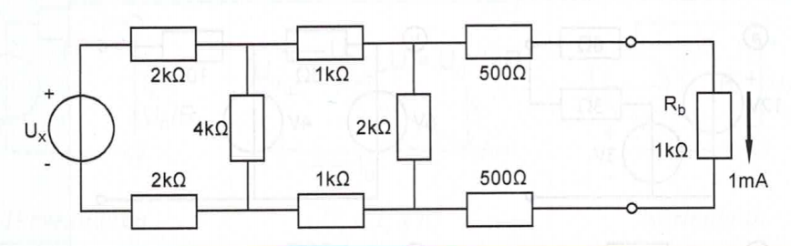
Aanpak: van rechts naar links de totale spanning van spanningsbron Ux bepalen
Eerst maar even in MultiSim het schema tekenen en voorzien van referenties:

Over weerstand R9 staat dus een spanning van
Dezelfde stroom loopt door R7 en R8 waardoor over R4 een totale spanning van 2V staat.
Door R4 loopt dus ook een stroom van 1 mA, zodat we direct weten (stroomwet van Kirchhoff) dat door R3 en R6 een stroom van 2 mA loopt. Over beide weerstanden dus 2V, zodat over R2 een spanning staat die gelijk is aan:
Als er 6 Volt over R2 staat loopt er dus een stroom door R4 die gelijk is aan:
, wat betekent dat door R1 en R5 een stroom loopt van 1,5 + 2 = 3,5 mA.
Over beide weerstanden dus 7V, zodat de spanning die de spanningsbron levert gelijk aan:
.
En dat klopt ook met de simulatie.
Opgave 1. u = kt [V]. Omdat I = C.du/dt = C. dkt/dt = C.k [A], dus een constante.
Als k = 10 V/s dan geldt dus: I = C.10 [A]. Dus bij een condensator van 1μF geldt dan I = 1μF . 10 V/s = 10 μA. En bij 1F geldt dan I = 10A.
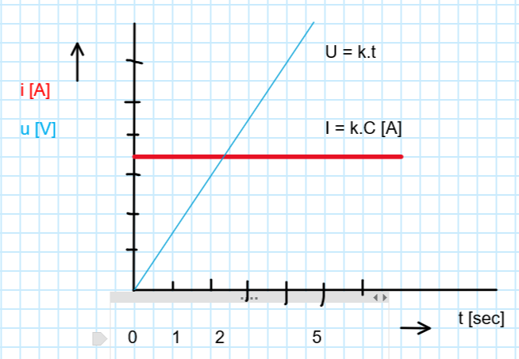
Opgave 2. i = kt [A]. Omdat U = L.di/dt = L. dkt/dt = L.k [V], dus een constante.
Als k = 10 A/s dan geldt dus: U = L.10 [V]. Dus bij een spoel van 1mH geldt dan U = 1mH . 10 A/s = 10 mV. En bij 1H geldt dan U = 10V.

Opgave 3. Dit is een verbijzondering van opgave 2. Want di/dt = U/L = 10V/100mH = 0,1 x 1000 [A/s] = 100 [A/s] Dus i = 100.t [A].
Na 1 ms is de stroom dus 100 mA, na 1s dus 100A etc.
H7 voorbeeld 7.6
Onderstaand de grafische "berekening" van blz. 84 - 86 met fasoren en met complex rekenen.
Z = Z1xZ2/(Z1+Z2)
Z = 1(1/Z1+1/Z2+1/Z3….) Check of je M+ kan gebruiken om complexe getallen op te tellen….
(100-100.i)x100/(100-100.i)+100 = (10.000-10.000i)/(200-100i)=
(100-100i)/(2-i) x (2+i)/(2+i) = (200-200i+100i+100)/(4+1)=
(300-100i)/5 = 60 - 20i.
Met complex rekenen kan bepaald worden (zie uitwerking in de .xlsx sheet)
Z = C1 + (R1+C2) || R2 = -40i + (100-100.i)||100 = 60 - 60.i
Als we dan u(t) = 10 nemen (dus de x-as), dan is
i(t) = u(t)/Z = 10/(60 - 60.i) = 10/(60-60.i) x (60+60.i)/ (60+60.i) =
10.(600+600i) /(3600+3600) = 0,0833 + 0,0833.i [Ampère]
De modulo van i(t) = 0,11785 A = 117,85 mA
En de fase hoek is φ = +450.
Dus de stroom loopt 450 voor op de spanning.

H 7.8 blz. 88 R, C en L schakelingen
Opgave 2. De Wienbrug
De umidden in het midden van het netwerkje = ½ u.
Met de knooppunten regel: teken de i links en de i rechts naar beneden door de R en C, waarbij umidden vast staat (= ½ u). De gevraagde i is dan natuurlijk het overschot van het linkse middenknooppunt of het tekort van rechtse middenknooppunt. En die zijn (uiteraard) aan elkaar gelijk.
Zie grafiek. Antwoord = ¾.π radialen.

Opgave 3. L + C||R
Je begint met iR
iC is 2 x zo groot als iR, maar loopt 900 voor.
iL is 900 achter op uL.
u = optelling van uL en uRC (rood + oranje = groen), waarbij de schaal van u 1000 x zo klein is als i.

Opgave 5. C + (C || (L+R))
Kies eerst de stroom door L en R (dus horizontaal). Neem de spanningen qua schaal 100 x zo klein als de stromen (dus i en u bij de R zijn qua lengte gelijk).
Je begint met iRL Vervolgens ligt uR dan uiteraard in dezelfde lijn.
uL loopt vervolgens 900 voor op iRL. (de stroom bij een spoel loopt immers achter bij de spanning)
iC2 loopt 900 voor op uC2.
iC1 is "toevallig" gelijk aan iC2 + iRL.
En uC1 is "toevallig" gelijk aan iRL.
De rest wijst zichzelf…..

De verhouding (10 vakjes = 1) van u / uC1 = √5/1 = 2,236
De verhouding uC2 / uC1 = √2 = 1,4142
Als u = 100V, dan is uC1 = 100/2,236 = 44,72V = uL
Dan is uC2 = 1,4142*44,72 = 63,24V
De stromen zijn allemaal /100, dus iL = iC1 = 447,2 mA en iC2 = 632,4 mA
Opgave 6.
Dit kan met fasoren of uitgeschreven complexe algebra. Beide is een enorme administratie.
Opgave 7 R + C||L
ZR = 1000. ZL = j.2.π.7950.20 mH = 999.j Ohm
ZC = 109 / 2.π.7950.10 = - 2002.j Ohm
Z totaal = 1000 + 1994,17202056843 i
|Z| = 2230 Ohm ≈ 1000.√5 Ohm (vreemde afronding, het is niet exact een veelvoud van √5)
Opgave 8 Gelijke warmte
Dit zou met fasoren kunnen, maar hier is een algebraïsche oplossing:
Itotaal = IC + IL+R
Maar ook geldt, omdat de warmteontwikkeling in de R-en gelijk moet zijn:
|Itotaal | = |IL+R |
We passen eerst de stroomdistributiewet (H.2.2.) toe:
IL+R = Itotaal . ZC / (ZC + ZL+R) = Itotaal /jωC / (1/jωC + R + j.R) =
Itotaal / (1 + jωCR - ωCR)
|(1 - ωCR + jωCR)| = 1 🡺
1 = 1 - 2.ωCR + (ωCR)2 + (ωCR)2 = 1 - 2.ωCR + 2.(ωCR)2
2.ωCR = 2.(ωCR)2 🡺 ωCR =1 🡺 ω = 1/RC
Opgave 9. RC en stroombronnen
Het eerste deel is een kwestie van spanningen berekenen door de U = I.Z steeds te berekenen (van de R + de C). De ZC is -100.j resp. -6,66.j
In het tweede deel wordt de stroom van de linker bron volledig afgevoerd door de middenbron. Dus loopt er door de linker tak geen stroom. UA = 0 [mits de C van 2 nF aanvankelijk leeg is….].
De rechtertak krijgt nu en stroom van
50.cos(ω.t ) + 150.cos(ω.t + π/2) [mA] = 158,11.cos( ω.t + 1,249)
te verduren.
De uR = 50 maal zo groot. En de uC is -66,6j keer zo groot.
Omdat de stroom ix (en i2) uit de + van ux komt, is de spanning van B positief t.o.v. punt A. We hoeven dus alleen maar de spanningen van R en C op te tellen om de UAB te krijgen.
Complex optellen levert UB = 12499+4166.j [mV]
De modulo = 13,18V en φ = 0,3218 rad. Terug naar het tijddomein levert dit dus
UAB = 13,18.cos(ω.t + 0,3218) V
Opgave 12 Fasor.
Als de spanning een cos() is en die wijst naar rechts, dan is de stroom door de spoel een cos() die 900 achter loopt. Dus dat kan alleen b. of d. zijn.
Omdat de stroom door de C juist voor loopt, maar geen 900, omdat daar nog een R is serie staat, is antwoord d. goed.
Opgave 13. Idem
Omdat de stroom i2(t) voor loopt kan alleen antwoord d. goed zijn (+ 0,2 π).
Om te checken of het complete antwoord goed is, moeten we de stroom berekenen:
ZCR = 20 - 15.j.
Dus de modulo = √202+152 = 25
Arctg(15/20) = 0,205.π.
u(t) = 1.cos(w.t + 0,205.π rad) [Volt]
En dat klopt ook met het antwoord d.
H.9.7 Blz. 120
Opgave 9. Spoel in serie met R || (R + C)
ZL = j.2.π.1000.10/1000 =
| ZL = | 62,8318531 | j Ohm |
|---|---|---|
| ZC = | 31,83098862 | -j Ohm |
Zrechts = 100||(50+5μF) = (Z100.Z50+Z5μF )/(Z100+Z50 + Z5μF)
100.(50-31,83j)/(100+50-31,83j) = (5000 - 3183j ) / (150 - 31,83j)
= (5000 - 3183j ) / (150 - 31,83j) * (150 + 31,83j)/(150 + 31,83j) (dus x 1)
= 36,20 - 13,54 j
Z = 36,20 - 13,54 j + 62,83 j = 36,20 + 49,29 j
Modulo = √(Re2+Im2) = 61,2 Ohm en φ = arctg(Im/Re) = 0,9373 rad.
Opgave 10. Onbekende L en bekende R
De "scheve" Z in het complexe vlak is dus 100 Ohm.
R = 25 Ohm 🡺 ZL = √(1002-252) = 96,82 Ohm
L = ZL / 2.π.f = 96,82 / 2513 = 38,52 mH
φ = arctg(96,82/25) = 1,318 rad = 75,520
Opgave 11. 3 dB punt C wegens 450
De stroom moet voorlopen op de spanning, dus er moet een C zitten.
De 450 faseverschuiving van het geheel is bij het 3 dB punt (over de C is de verschuiving natuurlijk gewoon 900). Dus de ZC = -50j.
De C waarde = 1/(2.π.f.R) = 0,318 μF.
Opgave 12. Bereken R en L van spoel
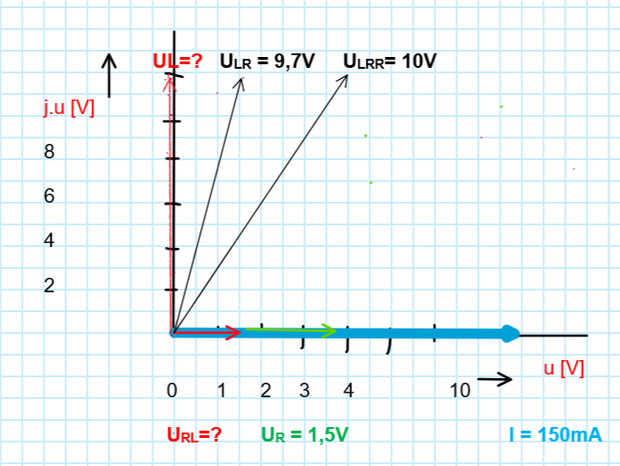
UR2 + UL2 = 9,72 en
(UR+1,5)2+ UL2 = 102
(UR+1,5)2+ 9,72 - UR2 = 102
3.UR = 100 - 2,25 - 9,72
UR = 3,66/3 = 1,22 V 🡺
R = 10*1,22/1,5 = 8,13 Ohm
UL = +wortel(9,72-1,222) = 9,6229 V
🡺 ZL = 9,6229/0,15 = 64,15 Ohm
En dus is L = 64,15/(2.π.100.000) = 102 μH
Extra opdracht IKEA trafo
Zie Xcel sheet.
Ik snap nog niet dat RL zo hoog is (ca. 18 Ohm); die moet ongeveer 0,4 Ohm zijn. Dat klopt dus niet…… Misschien wil iemand die proef ook thuis doen……
Je kunt dit ook met een oude TL ballast (smoorspoel) doen. Ook een mooi experiment. Daar moet ongeveer 38 Ohm en 1 a 2,5 H uit komen…. (ik kom op 28H en 1k8; dat is dus echt niet OK….
Opgave 13. Scope van 20pF en 1M op een 50 Ohm bron
Als de belaste uitgang op 1Vpk staat, wat is dan de spanning van de onbelaste uitgang?

Dit is een spanningsdeler met 50 Ohm en 20 pF||1M.
Bij 100 MHz geldt ZC = 1/(2.π.f.C.j) = 1/(6,28.100.106.20.10-9.j) = -j.79,6.
Hier uit volgt dat de 1 M kan worden verwaarloosd (factor 10.000 groter).
Voor de deler geldt een verzwakkingsfactor van:
uu/ui = ZC/(ZC+R) = -79,6.j/(50-79,6.j) = 0,72 - 0,45.j
De modulo van dit quotiënt = 0,847.
Dit betekent dat bij onbelaste bron ui van 1Vpk uu = 1/0,847 = 1,18 Vpk
H.10.6 Complex rekenen (vervolg)
Opgave 1. Théveninequivalent
Zth = 1 H (die spoel wordt met een stroombron met impedantie ∞ gevoed).
Uth = I. j.ω.L = 3.100.1.j. = 300.j
Dus de spanning is een cos(), die 900 voorloopt op de spanning, dus
Uth = 300.cos(ω.t + π/4 + π/2) = 300.cos(ω.t + ¾.π).
Opgave 2. Effectieve waarde van de stroom
ZC = 1/(j.w.C) = -j/(1000.20.10-6) = -j.50
De fase in de bron is niet relevant, omdat we alleen de effectieve waarde hoeven te berekenen. Dus die stellen we op 0 voor het gemak.
Het Norton model bestaat uit:
Ik = 3Vtop/100 Ohm = 0,03 A = 30 mA.
Zth = 100||100||-j.50 = 25 - 25.j. Dus
De stroomdelingsformule (blz. 18) levert dan op
i/(I-i) = Z/R 🡺 i.R = (I-i).Z 🡺 i.(R+Z) = I.Z dus
|i| = |I|.|Z/(R+Z)| = | ½√2.30.(25-25.j)/(R+25-25.j) | mA = [factor ½√2 van Itop 🡺 Ieff.]
½√2.30. √2.25 / √( (R+25)2 + 252) =
750/√(R2+50.R+625+625) =
750/√(R2+50.R+1250) mA
Opgave 5. Alternatieve "Wienbrug" met C en L.
1 nF 🡪 Z = 1/jωC = -j.106.10-9 = -j.1k
2 mH 🡪 Z = jωL = j.106.2.10-3 = j.2k.
Nu hoef je al bijna niet meer verder te gaan, omdat het lijkt dat beide takken een spanningsdeler hebben van 1:2. Alleen: zijn die spanningen ook in fase? Als dat zo is, is de stroom dus 0. Dus nu slaan we even de geplande stappen over, en gaan direct de 2 takken los van elkaar checken.
ulinks = u. 2/(2 - j) = 0,8 + 0,4j en
urechts = u. 2j/(1+2j) = 0,8 + 0,4j.
Dat is identiek, dus is de spanning bij een open verbinding
bij i(t) gelijk aan 0, en dus is i(t) = 0.
De rest hoef je dus niet eens meer uit te rekenen.

De meting van 124 pA moet je zien als 0 [A]
Variant
Het is interessant om te kijken of deze opdracht zich ook op laat lossen als de rechtsboven R = 2k, dus de "Wienbrug" is niet meer symmetrisch. Er loopt dan wel een echte stroom want de spanningen en de fases zijn dan ongelijk.
Een benadering zou kunnen zijn:
I(t) is 10.sin(…), want die komt uit een stroombron
Bepaal dan de impedanties van de 2 secties C||R en R||L.
Bepaal dan de spanningen van die 2 secties.
Bepaal dan de stromen door de 4 componenten in de brug, en het verschil in het middelpunt is dan de gevraagde stroom i(t).
Je kunt jezelf met Multisim controleren.
7. Complex CLR netwerk.

Z100nF= -j/(1000.100.10-9) = -j.10000 (deze blijkt eigenlijk verwaarloosbaar)
Z100mH = j.1000.0,1 = j.100
Bereken eerst de open klemspanning.
A = ZL/(ZL+R) = j.100/(j.100+100) = 0,5 + 0,5j (verzwakkingsfactor)
Dan bepaal je Zth (dus welke Z "zie je" als je in de bron van u(t) kijkt)
Zth = 100 || 100.j + -10000.j || (10 + 100.j) =
50+50i + 10,2030300958779+100,999794919095i =
60,203 + 150,9998 j.
Dus geldt: u(t) = 50.A. Rb /(Rb + Zth) = 25,9090 + 22,370.j
Modulo = 34,23 Ueff = 24,204V
φ = 0,712235 rad.
Terug naar reëel:
u(t) = 34,23.cos (1000.t + 0,7122) [V]
Gebruik evt. de spread sheet voor de producten en quotiënten. Bedenk wel dat je dit op het examen zonder Xcel moet kunnen.
H.11.7 Vermogen
2. S en P in RC netwerk.
Ueff = 10V
ZC = -j/(120.π.100) .106 = - 26,5.j
S = U2/Z = 100/(10 - 26,5.j) = 3,53 [VA]
P = S.cos(φ) = 1,246 [W]
Q = S.sin(φ) = 3,303 [VAR]
3. LR netwerk.
S = 0,5 . UI = 0,5.4.150 = 300 [VA] vergeet de dimensies er nooit bij te schrijven op je examen!
cos(π/3) = 0,5 🡺 P = 0,5 .300 = 150 [W]
Q = sin(π/3) = 0,866 . 300 = 260 [VAR inductief]
5. Compenseren blindvermogen met C
S = 600/0,75 = 800 [W].
φ = arccos(0,75) = 0,723 rad.
Q = S. sin(0,723) = 529,15 [VAR]
Bij cos(φ) = 0,99 is S = 600/0,99 = 606,06 [VA]
Dan is Q = Wortel(606,062 – 6002) = 85,50 [VAR]
De C moet dus 529,15 – 85,5 = 443,65 [VAR] compenseren.
Q = u2/Xc = u2.2.π.50.C
Dus is C = Q/( u2.2.π.50.) = 443,65/(2202.2.π.50) = 29,18 μF (het boek rondt te veel af). Of ze nemen, zoals in een eerdere opgave, een C van de E12 reeks. Dan moet je kiezen tussen 27 of 33 μF.
6. Scheidingsfilter luidspreker
Het blijkt dat de 0,1 Ohm serieweerstand de kabel voorstelt en niet de inwendige weerstand van de bron. Dus:
Eerst Z van de hele schakeling (d.w.z. eerst het parallel deel, en dan de rest optellen)
S = U2/Z is dan eenvoudig uit te rekenen.
Vervolgens trekken we daar I.I*.(0,1 + 0,9) Ohm (= de reële dissipatie) vanaf, zodat we het door de bron geleverde vermogen in de luidspreker krijgen.
ZC+luidspr = -5.j || (8 + 2,5.j ) = 2,85 - 4,11.j
Ztotaal = 0,1+0,9+4.j + 2,85 - 4,11.j = 3,85 - 0,11.j
S = U2/Z = 0,5 . 252 /(3,85 - 0,11.j) = 81,17 + 2,33.j (totale S vermogen, incl. verlies in de interne weerstand van 0,1 Ohm).
|S| = 81,199 VA (waarschijnlijk een verwarring van P en S t.o.v. het antwoord uit het boek 81,17 VA, omdat het vervolg wel klopt, als je van deze uitkomst uitgaat…).
I = 0,5.√2.25/(3,85 - 0,11.j) = 4,59 + 0,13.j
P0,1 Ohm = I.I*.R = 0,1 x (4,59 + 0,13.j).( 4,59 - 0,13.j )= 2,1098 W.
P0,1+0,9 Ohm = 21,098 W.
Pluidspr = 81,17 - 21,098 = 60,07 W
Alternatieve route:
Om het vermogen in de luidspreker te bepalen, berekenen we eerst de u over de luidspreker (spanningsdeler). En vervolgens delen we die door de Z van de luidspreker, zodat we de S van de luidspreker krijgen (en dus ook de P).
uu = ui . Zluidspr+C / (Zluidspr+C + 1 + 4j) =
0,5.√2.25.(2,8 - 4,11.j)/( 1 + 4j + 2,8 - 4,11.j) = 13,6 - 18,5.j
Sspeaker+L = uu2 /(8+2,5.j) = 60,0672-18,771i
Dus Pspeaker = 60,07 W
H.20.7 Ster-Driehoek transformatie
Opgave 6. LCR netwerk in resonantie
Na de Y-Δ transformatie van de 3 C's naar 3 x 0,333 nF (3 x zo klein is 3 x zo grote Z) ontstaat een netwerk met één C aan de bron, een serie LC en RC. Als de LC in resonantie is, zal i(t)=0 gelden.
ω = 106. C = 0,333 nF.
ω2 = 1/LC dus
L = 1/ ω2C = 10-12 /0,333. 10-9 = 10-3/0,333 = 3 mH.
Opgave 7. LCR netwerk
Na de Y-Δ transformatie van de 3 C's naar 3 x 18 nF ontstaat een spanningsdeler van de 2e en 3e LC kring. De eerste LC kring "doet niet mee", want die zit direct aan de spanningsbron.
Nu kunnen de formules van de spanningsdeler van H.10 toegepast worden. Zie Xcel sheet.
Bij 19 kHz geldt:
ZC = -465,36.j ZL = 465,58.j
ZLC2 = -990699,99152784i
ZLC3 = 4999,87264540109-25,2340400129123i
De verzwakking = ZLC3 /( ZLC2 + ZLC3 ) = 0,0000509379472562647+0,0050464223915227i
De modulo daarvan = 0,005 en φ = 1,56 rad.
Ui = 10.cos(ω.t) 🡺 Uu = 0,05.cos(ω.t + 1,56 rad)
Op dezelfde wijze kan dit berekend worden bij 15 kHz en 23 kHz:
15 kHz:
De modulo daarvan = 0,4976 en φ = -0,097 rad.
Ui = 10.cos(ω.t) 🡺 Uu = 4,976.cos(ω.t - 0,097 rad)
23 kHz:
De modulo daarvan = 0,4963 en φ = 0,12 rad.
Ui = 10.cos(ω.t) 🡺 Uu = 4,963.cos(ω.t + 0,12 rad)
Opgave 8.
Dit lijkt het makkelijkste in 2 stappen met superpositie te berekenen.

Stap 1. Stroombron weghalen.
Er is dan een bron van 10 + 5 = 15.cos(ω.t) [V].
En een spanningsdeler van 1k + 1 H boven en onder (1 μF serie 1 μF || 1 μF ) = 1,5 μF.
Invullen in de formules geeft dan:
Verzwakking = ZC / (ZC + ZL + R) = -0,2-0,6i
Uu = Ui x Verzwakking = 15 x (-0,2-0,6i) = - 3 - 9i
Uu_eff = 9,486 / √2 = 6,708 V (meting Multisim = 6,676 V)
Stap 2. Spanningbron weghalen en Δ-Y transformatie van de 3 C's

Dit levert een Thévenin spanningsbron met Z = 6 μF (-166,66 i) en
Uth = I.Z/2 = I.Z1,5μF / 2 = -5 i [V] (onbelast, halve spanning)
Verzwakking = (ZL + R)/ (ZL + R + ZCtot) = (1000.i + 1000)/ (1000.i + 1000 - 500.i)
Uu = Uth . Verzwakking = 2 - 6.i
Uueff = 6,324 / √2 = 4,472 V (meting Multisim 4,73 V; ca. 4% afwijking)
Stap 3. Superpositie optellen
Utot = - 3 - 9i + 2 - 6.i = -1 - 15.i
Modulo = 15,033 en
|φ| = 0,478 . π [rad] 🡺 φ = (-1 + 0,478) . π = - 0,5211 [rad].
Tamelijk grote afrondingsfout (0,5 π). Fout in de berekening?
Opgave 9. R-netwerk.
Door de rechtse 3 R's te vervangen in 3 x 9k in een ster, ontstaat de volgende schakeling:
(18k+9k || 9k+9k ) + 9k = (27k || 18 k ) + 9k = 10k8 + 9k = 19k8 (dus antwoord A)
H.21.5 Gekoppelde spoelen
Opgave 1. Basis
De totale flux Φ1 = 0,2 + 0,6 mWb = 0,8 mWb (lekflux + flux in spoel 2)
L1 = N1.dΦ1/di1 = 500.0,8/2 = 200 mH
L2 = (N2/N1)2 .L1 = 4.L1 = 800 mH
K1 = 0,6/0,8 = 0,75 = K2 = k.
M = 0,75 . √(200.800) = 300 mH.
Opgave 2.
n = √(L1/L2) = 2
M = k. √(L1.L2) = 0,9 . √8.2 = 3,6H
Opgave 3. Parallel en Serie LML
M = k.√L1.L2 = 0,5 √2 = 0,707
Je kunt vervolgens de bekende formules (zie Agenda) invullen, dus
(Anti-)serie: Ltotaal = L1 + L2 +(/-) 2.M = 2 + 1 + 2.0,707 = 4,414H.
Anti-serie LT = = 2 + 1 - 2.0,707 = 1,586H.
Parallel :  = (2*1-0,7072)/(2+1 -
2*0,707) = 0,9459H
= (2*1-0,7072)/(2+1 -
2*0,707) = 0,9459H
Anti-parallel :  =
(2*1-0,7072)/(2+1+2*0,707) = 0,3398H
=
(2*1-0,7072)/(2+1+2*0,707) = 0,3398H
Zie: https://www.electronics-tutorials.ws/inductor/series-inductors.html
en https://hardwarebee.com/inductors-in-parallel/
Alternatieve route is om m.b.v. het T-schema de complexe impedantie te berekenen (zie kladblok Xcel).
Parallel: LT = jω(L1-M) || jω(L2-M) + jωM = 0,9459.j 🡺 0,9459H
Anti-parallel: LT = jω(L1+M) || jω(L2+M) - (!) jωM = 0,3398.j 🡺 0,3398H
Opgave 4.
Gebruik de formule voor serieschakeling twee maal, en dat levert twee vergelijkingen met twee onbekenden:
LT = L1 + L2 +(/-) 2.M =
60 mH = L + L + 2.M.
20 mH = L + L - 2.M +
--------------------------------
80 mH = 4.L 🡺 L = 20 mH 🡺 M = 10 mH.
k = M/√L1.L2 = 10/√202 = 0,5
Opgave 5.
Om 4W in 10 Ohm te krijgen is een Ieff nodig van √P/R = √4/10 = 0,63A
Ueff = 10/√2 = 7,07V. (gegeven)
Zmod = U/I = 11,18 Ohm
Ztrafo_parallel = √(11,182 - 102) = 5 Ohm (en dus niet 5,04 Ohm)
Mparallel = Z/ω = 5/100 = 50 mH.
M = k. √50.80 = 63,25.k
Nu kan de formule voor || geschakelde spoelen gebruikt worden:
50 mH = (4000 - 63,252 .k2 ) / (130 - 126,5.k) 🡺
6500 - 6324.k = 4000 - 4000.k2
4000.k2 - 6324.k + 2500 = 0
D2 = b2-4ac = 6324^2-4*4000*2500 = 0
k = -b/2.a = 6324/8000 = 0,790569
Opgave 6.
Het schema moet eerst met T-schema worden vereenvoudigd, zodat een spanningsdeler ontstaat.

Een route is om U1 = 10V te veronderstellen en later te corrigeren naar het juiste voltage (zie schema). P = U2/R 🡺 U moet zijn U = wortel(P.R) = wortel(4.4) = 4V
Dus op basis van Multisim Ui = 10 * 4/ 3,287 = 12,17 V. Het schema is dus goed.
Vervolgens gaan we het Thévenin schema berekenen van de hele schakeling m.u.v. R3. Tenslotte sluiten we dan R3 aan.
L1' = L1 - M = 10mH, L2' = L2 - M = 10mH. De andere componenten zijn gegeven.
Z1 = Z2 = ZM = Z (10 mH) = jwL = 200.10m.j = 2.j
Zth = R2 + L2 + (LM + L3) || (R1 + L1) = (dit is de impedantie die R3 "ziet")
2 + 2j + (4.j || 2 + 2.j) = 2 + 2.j+ 0,8+1,6j = 2,8 + 3,6.j
Verzwakking1 = (LM + L3 ) / (LM + L3 + R1 + L1) = 4.j / (2 + 6.j)
Uth = 10V. 4.j / (2 + 6.j) =
De Verzwakking2 van de laatste spanningsdeler is dan 4/(4 + Zth) =
4/(4 + 2,8 + 3,6.j) = 4/(6,8 + 3,6.j)
Uu = Uth.Verzwakking2 = 10V. 4.j / (2 + 6.j) . 4/(6,8 + 3,6.j) = 0,541+3,243.j
|Uu| = 3,2879 (zie Xcel sheet)
Dus Ui is geen 10V maar 10 * 4/ 3,2879 = 12,1655 V
======
Op een andere manier kan het ook. Je kunt eerst spanning tussen L1 en L2 berekenen door:
UL1L2 = Ui. { (LM + L3)||(L2 + R2 + R3) }/{R1 + L1 + (LM + L3)||(L2 + R2 + R3)} =
Ui. { (4.j)||(2.j + 6) } / {2 + 2.j + (4.j)||(2.j + 6)}
Vervolgens pas je de spanningsdeler: R3 / (L2 + R2 + R3) = 4 / (2.j + 6) toe.
Zie spreadsheet. En dat levert (uiteraard) eveneens 3,2879 V op.
Opgave 7.
Ook hier vervangen we eerst de trafo door het complexe T-netwerk.
M = k.√L1/.L2 = 50 mH 🡺 L1' = L2'= 100-50 = 50 mH.
w = 1000 🡺 ZL = j.1000.50m = +50.j
ZC = 1/jwC = -j.10-3.10+6/10 = -100.j

Volgens Multisim Ueff = 59,082V 🡺 Upk = 83,55V (83,2V antwoord…. Multisim maakt in dit geval (afrondings-) fouten)
De berekening verloopt als volgt (er zijn meerdere wegen naar Rome!):
Bereken de impedantie van het geheel R1+L1+(LM||(L2+R2+ R3||C2 + C1).
Dat levert U over de spanningsbron = I.Ztot.
Vervolgens bereken je eerst Verzwakking1 naar UL1-L2
En tenslotte bereken je Verzwakking2 naar de uitgang.
Ii = 3.cos(1000.t + π/4) = 3/√2 + 3/√2 .j
Ztot = 200+50.j+(50.j || (50.j + 100 + 200||-100.j - 100.j) =
200+50.j+(50.j || (50.j + 100 + 40 - 80i - 100.j) =
200+50.j+(50.j || (140 - 130.j) = 213 + 107.j
Verzwakking1 = (50.j||( 140 - 130.j) / Ztot
Verzwakking2 = (R3||C2) / (L2+R2+ R3||C2 + C1) = (40 - 80.j ) / ( 140 - 130.j)
Uu = Ii.Ztot.Verzwakking1.Verzwakking2 = 83,205 V
φ = 0,5628 π rad.
Dus 83,2.cos(1000.t + 0,5628 π) [Volt]
Les 6
Opdracht 1.
https://elektromotorendevier.nl/blog/29/een-3-fase-motor-aansluiten-op-230-v-1-fase
en
https://de.wikipedia.org/wiki/Steinmetzschaltung
ω
π
φ
Δ
μ
√
Φ
≈
μ